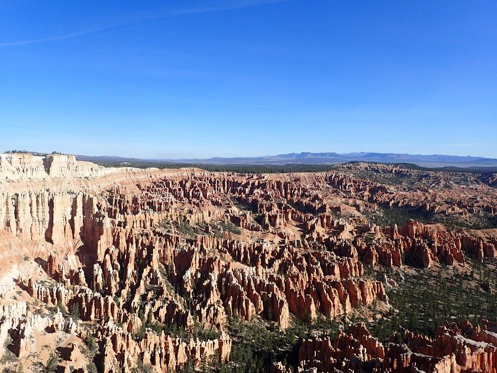

After doing Copper Belt Peak, I headed south to Bryce Canyon, again sleeping in my car and then heading into the park in the morning.
I rode the shuttle bus in and went as far out as it would take me, then did a hike down one part of the canyon and back up the other side. While it was really cool scenery, the descent was hard and my feet were still hurting from the Copper Belt Ascent, plus the trails were as hard as concrete. Once I was done with the hike, I sat in the shade for a while, and then took the shuttle back out.

I found a pullout to camp on just outside the park, and then got up at about 1:00 in the morning, and from there I hiked into the park, to see the stars and the sunrise. The moon was barely out and the stars were brilliant. There were a few other people in the park taking pictures of the stars, and the odd headlamp in the distance, but other than that it was totally quiet.
Just before sunrise, I made my way to Sunset point and set up my camera to take a timelapse of it.
I watched the sunrise and talked with an older gentlemen about photography and his adventures riding a motorcycle across the United States when he was young.
Then I walked back out to take a nap next to my truck.